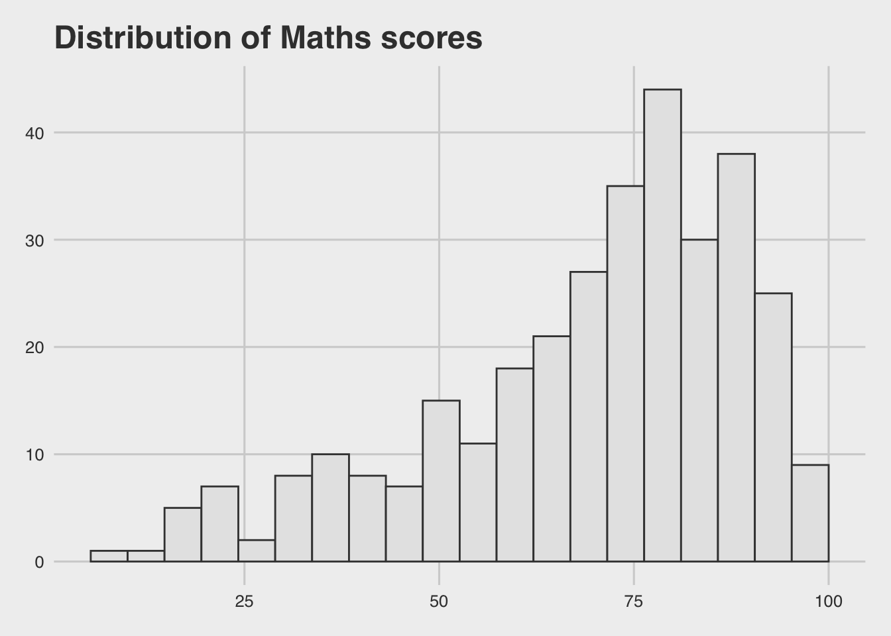

pacman::p_load(ggrepel, patchwork,ggthemes, hrbrthemes,tidyverse) Hands-on Exercise 02
ggplot2
ggrepel
patchwork
themes
Beyond ggplot2 Fundamentals
2.1 Learning Object
Learn several ggplot2 extentions:
Use ggrepel to control the placement of annotations on graphs
Use ggthemes and hrbrthemes to create professional publication quality figure
Use patchwork package to plot composite figure by combining ggplot2 graphs
2.2 Getting Started
2.2.1 Installing and loading the required libraries
ggrepel: an R package provides geoms for ggplot2 to repel overlapping text labels.
ggthemes: an R package provides some extra themes, geoms, and scales for ‘ggplot2’.
hrbrthemes: an R package provides typography-centric themes and theme components for ggplot2.
patchwork: an R package for preparing composite figure created using ggplot2.
Code chunk below will be used to check if these packages have been installed and also will load them onto your working R environment.
2.2.2 Importing data
exam_data <- read_csv("data/Exam_data.csv")The dataset contains examination grades for 3 subjects from a local school. We can use head() and summary() function inspect the dataset.
There are a total of 7 attributes. 4 of them are categorical data type and the other 3 are in continuous data type.
The categorical attributes are: ID, CLASS, GENDER and RACE.
The continuous attributes are: MATHS, ENGLISH and SCIENCE.
head(exam_data,5)# A tibble: 5 × 7
ID CLASS GENDER RACE ENGLISH MATHS SCIENCE
<chr> <chr> <chr> <chr> <dbl> <dbl> <dbl>
1 Student321 3I Male Malay 21 9 15
2 Student305 3I Female Malay 24 22 16
3 Student289 3H Male Chinese 26 16 16
4 Student227 3F Male Chinese 27 77 31
5 Student318 3I Male Malay 27 11 25summary(exam_data) ID CLASS GENDER RACE
Length:322 Length:322 Length:322 Length:322
Class :character Class :character Class :character Class :character
Mode :character Mode :character Mode :character Mode :character
ENGLISH MATHS SCIENCE
Min. :21.00 Min. : 9.00 Min. :15.00
1st Qu.:59.00 1st Qu.:58.00 1st Qu.:49.25
Median :70.00 Median :74.00 Median :65.00
Mean :67.18 Mean :69.33 Mean :61.16
3rd Qu.:78.00 3rd Qu.:85.00 3rd Qu.:74.75
Max. :96.00 Max. :99.00 Max. :96.00 2.3 Beyond ggplot2 Annotation: ggrepel
One of the challenges in plotting statistical graph is annotation, especially with large number of data points. As shown in the plots below, both labels and texts annotation are messy and overlapping, which makes them difficult for readers to understand.
ggplot(data=exam_data,
aes(x=MATHS,y=ENGLISH))+
geom_point()+
geom_smooth(method=lm,size=0.5)+
geom_label(aes(label = ID),hjust=0.5,vjust=-0.5)+
coord_cartesian(xlim=c(0,100), ylim = c(0,100))+
ggtitle("English scores versus Maths scores for Primary 3")+
theme_classic()+
theme(plot.title = element_text(hjust = 0.5, face="bold"),
# adjust the background color behind the bar chart
panel.background = element_rect(fill = "#f3f1e9"),
# adjust the background color of the whole plot
plot.background = element_rect(fill = "#f3f1e9",color = NA))ggplot(data=exam_data,
aes(x=MATHS,y=ENGLISH))+
geom_point()+
geom_smooth(method=lm,size=0.5)+
geom_text(aes(label = ID),hjust=0.5,vjust=-0.5)+
coord_cartesian(xlim=c(0,100), ylim = c(0,100))+
ggtitle("English scores versus Maths scores for Primary 3")+
theme_classic()+
theme(plot.title = element_text(hjust = 0.5, face="bold"),
# adjust the background color behind the bar chart
panel.background = element_rect(fill = "#f3f1e9"),
# adjust the background color of the whole plot
plot.background = element_rect(fill = "#f3f1e9",color = NA))This is where ggrepel comes in. It is an extension of ggplot2 package, provides geoms for ggplot2 to repel overlapping text as in our examples above.
We simply replace geom_text() by geom_text_repel() and geom_label() by geom_label_repel.
However, since ggrepel’s purpose is to prevent overlapping labels and texts, it will only display non-overlapping labels when there are too many to fit in the plot. To show more labels, we can adjust the parameter max.overlaps = 20 , the higher this number, the more labels will be displayed.
ggplot(data=exam_data,
aes(x=MATHS,y=ENGLISH))+
# Use aes(color=cat) to seperate points by diff colors
geom_point(aes(color=GENDER))+
scale_color_manual(values = c("#D9A4C3", "#A4A8D9"))+
geom_smooth(method=lm,size=0.5)+
# Use aes(color=cat) to seperate labels by diff colors
geom_label_repel(aes(label = ID, color = GENDER),
size = 3,
fontface="bold",
# change this setting to get more labels
max.overlaps = 20)+
coord_cartesian(xlim=c(0,100), ylim = c(0,100))+
ggtitle("English scores versus Maths scores for Primary 3 by Gender")+
theme_classic()+
theme(plot.title = element_text(hjust = 0.5, face="bold"),
# adjust the background color behind the bar chart
panel.background = element_rect(fill = "#f3f1e9"),
# adjust the background color of the whole plot
plot.background = element_rect(fill = "#f3f1e9",color = NA),
legend.background = element_rect(fill = "#f3f1e9"))ggplot(data=exam_data,
aes(x=MATHS,y=ENGLISH))+
geom_point(aes(color=GENDER))+
scale_color_manual(values = c("#D9A4C3", "#A4A8D9"))+
geom_smooth(method=lm,size=0.5)+
geom_text_repel(aes(label = ID,color = GENDER))+
coord_cartesian(xlim=c(0,100), ylim = c(0,100))+
ggtitle("English scores versus Maths scores for Primary 3 by Gender")+
theme_classic()+
theme(plot.title = element_text(hjust = 0.5, face="bold"),
# adjust the background color behind the bar chart
panel.background = element_rect(fill = "#f3f1e9"),
# adjust the background color of the whole plot
plot.background = element_rect(fill = "#f3f1e9",color = NA),
legend.background = element_rect(fill = "#f3f1e9"))2.4 Beyond ggplot2 Themes
ggplot2 comes with eight built-in themes, they are: theme_gray(), theme_bw(), theme_classic(), theme_dark(), theme_light(), theme_linedraw(), theme_minimal(), and theme_void():
ggplot(data = exam_data,
aes(x = RACE))+
geom_bar(bins=20,fill="#E8C8DB",color="black")+
coord_flip()+
theme_classic()+
ggtitle("Number of Students by Race")+
theme(plot.title = element_text(hjust = 0.5, face="bold"),
# adjust the background color of the whole plot
plot.background = element_rect(fill = "#f3f1e9",color = NA),
legend.background = element_rect(fill = "#f3f1e9"))
ggplot(data = exam_data,
aes(x = RACE))+
geom_bar(bins=20,fill="#E8C8DB",color="black")+
coord_flip()+
theme_minimal()+
ggtitle("Number of Students by Race")+
theme(plot.title = element_text(hjust = 0.5, face="bold"),
# adjust the background color of the whole plot
plot.background = element_rect(fill = "#f3f1e9",color = NA),
legend.background = element_rect(fill = "#f3f1e9"))ggplot(data = exam_data,
aes(x = RACE))+
geom_bar(bins=20,fill="#E8C8DB",color="black")+
coord_flip()+
theme_bw()+
ggtitle("Number of Students by Race")+
theme(plot.title = element_text(hjust = 0.5, face="bold"),
# adjust the background color of the whole plot
plot.background = element_rect(fill = "#f3f1e9",color = NA),
# adjust the color of panel grid
legend.background = element_rect(fill = "#f3f1e9"))
ggplot(data = exam_data,
aes(x = RACE))+
geom_bar(bins=20,fill="#E8C8DB",color="black")+
coord_flip()+
theme_dark()+
ggtitle("Number of Students by Race")+
theme(plot.title = element_text(hjust = 0.5, face="bold"),
# adjust the background color of the whole plot
plot.background = element_rect(fill = "#f3f1e9",color = NA),
legend.background = element_rect(fill = "#f3f1e9"))ggplot(data = exam_data,
aes(x = RACE))+
geom_bar(bins=20,fill="#E8C8DB",color="black")+
coord_flip()+
theme_light()+
ggtitle("Number of Students by Race")+
theme(plot.title = element_text(hjust = 0.5, face="bold"),
# adjust the background color of the whole plot
plot.background = element_rect(fill = "#f3f1e9",color = NA),
legend.background = element_rect(fill = "#f3f1e9"))ggplot(data = exam_data,
aes(x = RACE))+
geom_bar(bins=20,fill="#E8C8DB",color="black")+
coord_flip()+
theme_linedraw()+
ggtitle("Number of Students by Race")+
theme(plot.title = element_text(hjust = 0.5, face="bold"),
# adjust the background color of the whole plot
plot.background = element_rect(fill = "#f3f1e9",color = NA),
legend.background = element_rect(fill = "#f3f1e9"))ggplot(data = exam_data,
aes(x = RACE))+
geom_bar(bins=20,fill="#E8C8DB",color="black")+
coord_flip()+
theme_void()+
ggtitle("Number of Students by Race")+
theme(plot.title = element_text(hjust = 0.5, face="bold"),
# adjust the background color of the whole plot
plot.background = element_rect(fill = "#f3f1e9",color = NA),
legend.background = element_rect(fill = "#f3f1e9"))2.4.1 Working with ggtheme package
ggthemes provides ‘ggplot2’ themes that replicate the look of plots by Edward Tufte, Stephen Few, Fivethirtyeight, The Economist, ‘Stata’, ‘Excel’, and The Wall Street Journal, among others.
ggplot(data=exam_data, aes(x = MATHS, y= ENGLISH))+
geom_point(aes(color = RACE))+
ggtitle("Distribution of Maths scores") +
theme_wsj(base_size = 10) + scale_color_wsj()ggplot(data=exam_data, aes(x = MATHS))+
geom_histogram(bins=20, boundary=100,color="grey25",fill="grey90")+
ggtitle("Distribution of Maths scores") +
theme_economist()
ggplot(data=exam_data, aes(x = MATHS))+
geom_histogram(bins=20, boundary=100,color="grey25",fill="grey90")+
ggtitle("Distribution of Maths scores") +
theme_fivethirtyeight()
2.4.2 Working with hrbthemes package
hrbrthemes package provides a base theme that focuses on typographic elements (default font type is Arial), including where various labels are placed as well as the fonts that are used.
axis_title_sizeargument is used to increase the font size of the axis title to 18,base_sizeargument is used to increase the default axis label to 15, andgridargument is used to remove the x-axis and y-axis grid lines. The default setting is grid = “XY”, if user only want to remain horizontal grid lines, set grid = “Y”axisargument control whether to show or hide the x-axis and y-axis lines. By default, the axes are hidden.
To make the graph more informative and descriptive, we can use lab() function to add the subtitle and the source:
labs( title=” “, subtitle=” “, caption=” “, x=” “, y=” “)
- add “\n” to create line breaks when your subtitle is too long to be displayed on a single line.
Below are the plots using hrbthemes:
ggplot(data=exam_data, aes(x = MATHS)) +
geom_histogram(bins=20, boundary = 100,
color="grey25", fill="grey90") +
labs(title="Distribution of Maths scores",
subtitle="The Math Score distribution for Primary 3 is left-skewed,\n indicating that most students achieved high grades in math",
x="Math Score",
caption="Source: ISSS608 VAA")+
theme_ipsum()+
theme(# adjust the background color of the whole plot
plot.background = element_rect(fill = "#f3f1e9",color = NA))ggplot(data=exam_data,
aes(x = MATHS)) +
geom_histogram(bins=20, boundary = 100,
color="grey25", fill="grey90") +
labs(title="Distribution of Maths scores",
subtitle="The Math Score distribution for Primary 3 is left-skewed,\n indicating that most students achieved high grades in math",
x="Math Score",
caption="Source: ISSS608 VAA")+
theme_ipsum(grid = "Y", axis_title_size = 10 , base_size = 12)+
theme(# adjust the background color of the whole plot
plot.background = element_rect(fill = "#f3f1e9",color = NA))2.5 Beyond Single Graph
There are several ggplot2 extensions provide functions to compose figure with multiple graphs, such as grid.arrange() of gridExtra package, plot_grid() of cowplot package, and ggplot2 extension called patchwork which is specially designed for combining separate ggplot2 graphs into a single figure.
Patchwork package has a very simple syntax where we can create layouts super easily. Here’s the general syntax that combines:
Two-Column Layout using the Plus Sign +.
Parenthesis () to create a subplot group.
Two-Row Layout using the Division Sign
/
2.5.1 Combining two ggplot2 graphs
First, let’s draw several graphs:
p1 <- ggplot(data=exam_data,
aes(x = MATHS)) +
geom_histogram(bins=20, boundary = 100,
color="grey25", fill="#E8C8DB") +
coord_cartesian(xlim=c(0,100)) +
ggtitle("Distribution of Maths scores")+
theme_classic()+
theme(plot.title = element_text(size = 12, face="bold"),
plot.background = element_rect(fill = "#f3f1e9",color = NA))
p2 <- ggplot(data=exam_data,
aes(x = ENGLISH)) +
geom_histogram(bins=20, boundary = 100,
color="grey25", fill="#C8CBE8") +
coord_cartesian(xlim=c(0,100)) +
ggtitle("Distribution of English scores")+
theme_classic()+
theme(plot.title = element_text(size = 12, face="bold"),
plot.background = element_rect(fill = "#f3f1e9",color = NA))
p3 <- ggplot(data=exam_data,
aes(x= MATHS, y=ENGLISH)) +
geom_point() +
geom_smooth(method=lm, size=0.5) +
coord_cartesian(xlim=c(0,100), ylim=c(0,100)) +
ggtitle("English scores versus Maths scores")+
theme_classic()+
theme(plot.title = element_text(size = 12, face="bold"),
plot.background = element_rect(fill = "#f3f1e9",color = NA))p1+p22.5.2 Combining three or more ggplot2 graphs
We can plot more complex composite by using appropriate operators. For example, the composite figure below is plotted by using:
“/” operator to stack two ggplot2 graphs,
“|” operator to place the plots beside each other,
“()” operator the define the sequence of the plotting.
(p1 / p2) | p32.5.3 Creating a composite figure with tag
In order to identify subplots in text, patchwork also provides auto-tagging capabilities as shown in the figure below.
tag_levels could be ‘I’, ‘A’, ‘1’
((p1/p2)|p3) +
plot_annotation(tag_levels = 'I')((p1+p2)/p3) +
plot_annotation(tag_levels = 'A')((p1/p2)|p3) +
plot_annotation(tag_levels = '1')2.5.4 Adding subtitle and caption to the patchwork
we can also use plot_annotation() to add the title, subtitle and caption to the patchwork, and use theme() argument to cusomize the font size, font weight, background color and other visual parameters.
Here we add theme() parameter in plot_annotation() to adjsut the element of patchwork’s title , subtitle…instead of using “&” or “+” to link functions.
However, we can use “& theme()” after plot_annotation() to adjust the visual parameters of the graphs in the patchwork together.
((p1 / p2) | p3) +
plot_annotation(
tag_levels = "I",
title = "Exam Performance for Primary 3",
subtitle = "The plots show that there is a positive relationship between Math scores and English scores.\nIn addtion, most students of Primary 3 got high scores on both subjects.",
caption = "Source: ISSS608 VAA",
theme = theme(plot.title = element_text(size = 14, face = "bold"),
plot.background = element_rect(fill = "#f3f1e9", color = NA),
plot.margin = margin(10, 10, 10, 10))) &
theme(axis.title = element_text(size=8) # adjust all axis titles to size = 8
)2.5.5 Creating figure with insert
Beside providing functions to place plots next to each other based on the provided layout. With inset_element() of patchwork, we can place one or several plots or graphic elements freely on top or below another plot.
p3 + inset_element(p2, left=0.02, bottom =0.6, right=0.5, top=1)
2.5.6 Creating a composite figure by using patchwork and ggtheme
Figure below is created by combining patchwork and theme_economist() of ggthemes package discussed earlier.
p4 <- ggplot(data=exam_data,
aes(x = MATHS)) +
geom_histogram(bins=20, boundary = 100,
color="grey25", fill="grey90") +
coord_cartesian(xlim=c(0,100)) +
ggtitle("Distribution of Maths scores")
p5 <- ggplot(data=exam_data,
aes(x = ENGLISH)) +
geom_histogram(bins=20, boundary = 100,
color="grey25", fill="grey90") +
coord_cartesian(xlim=c(0,100)) +
ggtitle("Distribution of English scores")
p6 <- ggplot(data=exam_data,
aes(x= MATHS, y=ENGLISH)) +
geom_point() +
geom_smooth(method=lm, size=0.5) +
coord_cartesian(xlim=c(0,100), ylim=c(0,100)) +
ggtitle("English scores versus Maths scores")
((p4 / p5) | p6) +
plot_annotation(
title = "Exam Performance for Primary 3",
subtitle = "The plots show that there is a positive relationship between Math scores and English scores.\nIn addtion, most students of Primary 3 got high scores on both subjects.",
caption = "Source: ISSS608 VAA")&
theme_economist() &
theme(axis.title.x = element_text(size=8, margin = margin(t=5)), #above
axis.title.y = element_text(size=8, margin = margin(r=5)),
axis.text.x = element_text(size = 8),
axis.text.y = element_text(size = 6),
plot.title = element_text(size = 11))